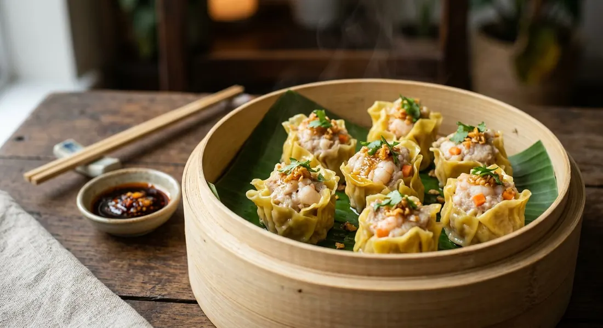

Steamed Thai dim sum dumplings — a bouncy pork and prawn filling wrapped in thin wonton skins and pleated open at the top. The dumpling that anchors every Thai starter menu.

ขนมจีบ
Kanom jeeb is the steamed one. Where gyoza is pan-fried with a crisp base and kiao tod is deep-fried, kanom jeeb goes into the steamer — a cup-shaped pleat of thin wonton skin, open at the top so you can see the filling, brushed with fried garlic oil until it glistens.
Thai dim sum carts sell it in bamboo baskets alongside ha-gaw and salapao, and nearly every Thai restaurant in the UK lists it in the starter section. The filling is the point of difference from its Chinese relatives: coriander root, garlic and white pepper pounded into a paste, worked into pork and prawn with starch until the texture turns springy — the quality Thais call คว่าเด้ง, "bounce".
| Thai | English | Amount |
|---|---|---|
| หมูบด | Minced pork, with some fat | 300g |
| กุ้ง | Prawns, shelled, finely chopped | 150g |
| รากผักชี | Coriander root | 2 roots |
| กระเทียม | Garlic | 3 cloves |
| พริกไทยขาว | White peppercorns | 1/2 tsp |
| ซีอิ๊วขาว | Light soy sauce | 1 tbsp |
| ซอสปรุงรส | Seasoning sauce | 1 tbsp |
| น้ำตาลทราย | Sugar | 1 tbsp |
| น้ำมันงา | Sesame oil | 1 tsp |
| แป้งมัน | Tapioca or corn starch | 1 tbsp |
| แครอท | Carrot, finely diced, for the filling and to top each dumpling | 50g |
| Thai | English | Amount |
|---|---|---|
| แผ่นเกี๊ยวบาง | Thin wonton wrappers | 24 |
| น้ำมันเจียวกระเทียม | Fried garlic oil, for brushing | 2 tbsp |
| Thai | English | Amount |
|---|---|---|
| ซีอิ๊วดำ | Dark soy sauce | 1/4 cup |
| น้ำเชื่อม | Sugar syrup | 2 tbsp |
| น้ำส้มสายชู | White vinegar | 1 tbsp |
| พริกจินดา | Fresh bird's eye chillies, finely pounded | 1 tbsp |
Cold is the secret. Chill the mince before you work it, knead in one direction until it turns dense and slightly tacky, then rest it in the fridge. Warm or over-handled filling steams up crumbly instead of springy.
Kanom jeeb is not sealed shut. You gather the wrapper loosely around the filling so it sits like a cup, leaving the top open — partly for looks, partly so the steam can cook the filling directly. A pinch of diced carrot on top is the traditional garnish.
This recipe is translated from the following Thai-language sources. Where they disagree, we've said so.
1. Aroifin — kanom jeeb goong — https://www.aroifin.com
2. TrueID Food — kanom jeeb moo sap — https://food.trueid.net
3. Wongnai — kanom jeeb moo deng — https://www.wongnai.com
4. Pim.in.th — kanom jeeb goong (mixed pork) — https://pim.in.th
5. Pholfoodmafia — Bird Dumpling — https://pholfoodmafia.com